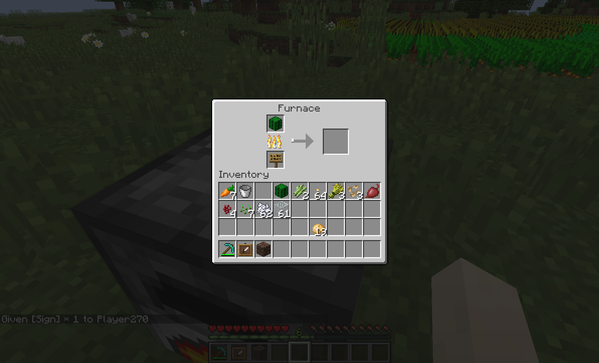
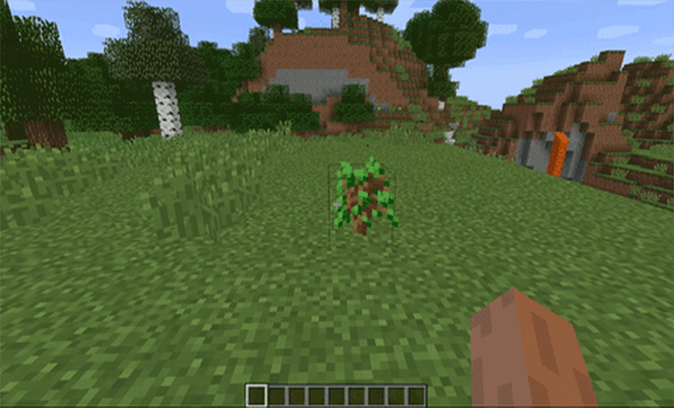
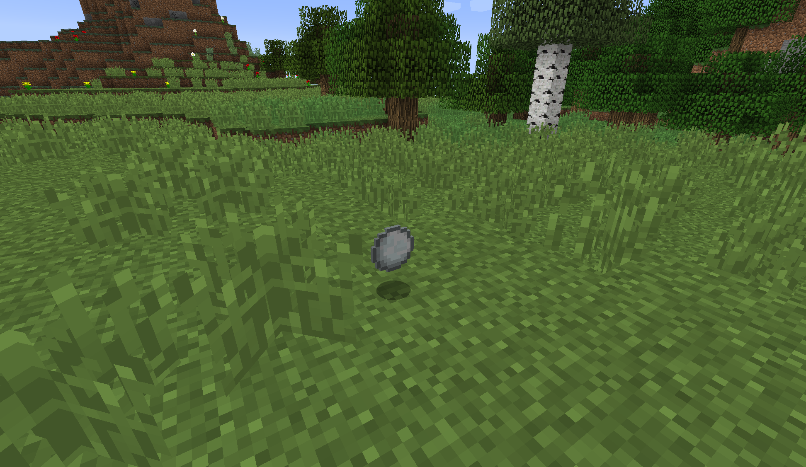
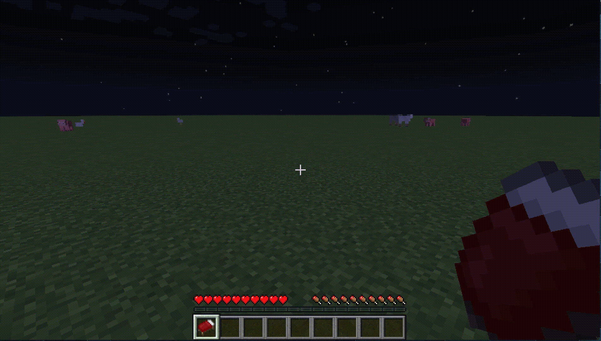
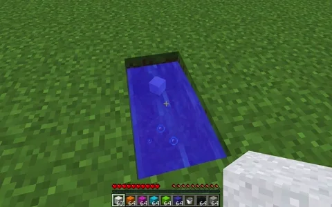

Extra Burnables
Item Tweaks
Filter by Game Version:

1.8.x, 1.9.x, 1.10.x

Organic Saplings
1.9.x, 1.10.x, 1.12.x, 1.14.x

Hatching Eggs
1.9.x, 1.10.x, 1.12.x, 1.14.x

Adjustable Despawn Timers
1.9.x, 1.10.x, 1.12.x, 1.14.x

Leaf Blower
1.9.x, 1.10.x

Sleeping Bags
1.9.x, 1.10.x

Concrete Tweaks
1.12.x, 1.14.x
Extra Burnables
Very simple: adds carefully calculated fuel values to wooden items that don't smelt!
Organic Saplings
 A natural approach to saplings!
A natural approach to saplings!
Instead of despawning, you can have saplings attempt to plant themselves before they despawn, allowing for easier farming and a more natural feeling.
Hatching Eggs
If you don't go grabbing eggs, they hatch.... right? This is a configurable chance (to avoid
spamming your world with chickens, of course!).
Adjustable Item Despawn Timers
Tired of items disappearing on you??
Enabling this feature lets you adjust how long items take to despawn. Setting it to -1 means they never will!!
Enabling this feature lets you adjust how long items take to despawn. Setting it to -1 means they never will!!
Axe Leaf Blowing!
 Just another step towards making cutting down trees easier!
Just another step towards making cutting down trees easier!
Axes can break a 7x7x7 of leaves in an area! Don't worry, it only damages the axe once instead of for every leaf block broken.
Sleeping Bags
 Without adding any new items, I still wanted to add sleeping bags for portable sleeping. So
how's it work?
Without adding any new items, I still wanted to add sleeping bags for portable sleeping. So
how's it work?
Take a bed and rename it in an anvil to "Sleeping Bag". Capitalization doesn't matter - spelling, however, does. Once you do, if you right-click it and it'll be day before you know it!
If you're on a multiplayer server, 50% of players (including yourself) must be asleep for it to work. This will not count other players trying to use sleeping bags.
Concrete Tweaks
 Everyone (literally anyone who has used concrete in Minecraft) knows how big of a pain it is to
constantly sit there and hold left and right click while waiting for all your concrete powder to
solidify. Concrete Tweaks will convert thrown Concrete Powder into solidified Concrete if it hits
water. Additionally, dispenser support is enabled so you can automate the process!
Everyone (literally anyone who has used concrete in Minecraft) knows how big of a pain it is to
constantly sit there and hold left and right click while waiting for all your concrete powder to
solidify. Concrete Tweaks will convert thrown Concrete Powder into solidified Concrete if it hits
water. Additionally, dispenser support is enabled so you can automate the process!